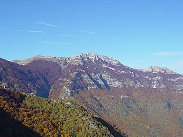
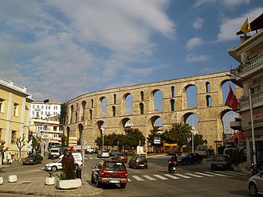
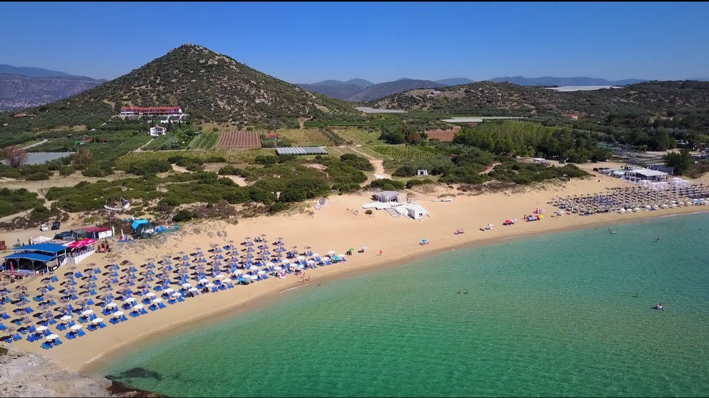
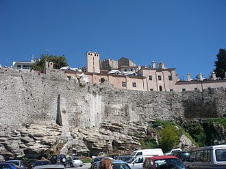

| Το Παγγαίο όρος είναι μεγάλος ορεινός όγκος της Ελλάδας που εκτείνεται στους νομούς Καβάλας και Σερρών. Στο βουνό και στις γύρω από αυτό περιοχές υπάρχουν πολλές και μεγάλες πηγές, καθώς και ρέματα που τροφοδοτούνται από το βουνό. Η υψηλότερη κορυφή του είναι το "Μάτι" με υψόμετρο 1.956 μέτρα. Τα δασαρχεία Καβάλας και Σερρών είναι υπεύθυνα για την προστασία του βουνού. |
 |
|  |
Το Παλαιό Υδραγωγείο, γνωστό και ως Καμάρες, είναι ένα καλά διατηρημένο υδραγωγείο στην πόλη της Καβάλας και είναι ένα από τα ορόσημα της πόλης. Ενώ το υδραγωγείο είναι πιθανώς ρωμαϊκής προέλευσης, η σημερινή δομή χρονολογείται στον 16ο αιώνα. Ένα βυζαντινό τείχος των αρχών του 14ου αιώνα, που χτίστηκε ως μέρος των οχυρώσεων στην ακρόπολη της Καβάλας, πιθανότατα λειτουργούσε και ως υδραγωγείο. Αν ναι, θα ήταν ένα σπάνιο παράδειγμα ενός βυζαντινού υδραγωγείου, δεδομένου ότι οι βυζαντινές πόλεις χρησιμοποίησαν συνηθέστερα πηγάδια και δεξαμενές αντί να διατηρήσουν τα υπάρχοντα ρωμαϊκά υδραγωγεία ή να κατασκευάσουν νέα. Ο τοίχος του φράγματος αντικαταστάθηκε με το σημερινό τοξωτό υδραγωγείο κατά τη διάρκεια της επιδιόρθωσης και βελτίωσης των βυζαντινών οχυρώσεων του Σουλεϊμάν του Μεγαλοπρεπούς και την ίδια περίοδο πραγματοποιούνται αναστηλώσεις και σε άλλα μνημεία της πόλης αλλά και της Κωνσταντινουπόλεως. Κάποιοι συγγραφείς χρονολογούν την κατασκευή μέχρι το 1522 της πολιορκίας της Ρόδου, αλλά μια πιο πιθανή ημερομηνία είναι μεταξύ 1530 και 1536. Μέχρι το 1911, εξακολουθούσε να χρησιμοποιείται για να τροφοδοτήσει την πόλη με πόσιμο νερό από την περιοχή της Παλιάς Καβάλας, σε υψόμετρο 400 μέτρων |
| Δυτικά της Περάμου θα βρείτε τις εξωτικές παραλίες των Αμμολόφων. Η ψιλή λευκή άμμος σε συνδυασμό με τα διάφανα νερά θα σας μαγέψουν! Είναι το πιο πολυσύχναστο μέρος ειδικά για τη νεολαία όλης της Ανατολικής Μακεδονίας, όπου το Σαββατοκύριακο τα πάρτι διαρκούν μέχρι αργά το βράδυ! Βέβαια, αν επιθυμείτε και πιο ήσυχες γωνιές, δεν έχετε παρά να τις ανακαλύψετε! Μπορεί κανείς να φτάσει με το υπεραστικό λεωφορείο ως τη Νέα Πέραμο και από εκεί να περπατήσει ή να πάρει ταξί. Κατά τη θερινή περίοδο το λεωφορείο συνεχίζει ως τους Αμμολόφους. |
 |
|  |
Το Ιμαρέτ της Καβάλας βρίσκεται σε περίοπτη θέση εντός των τειχών της παλιάς πόλης της, στη χερσόνησο της Παναγίας. Το μέγεθός του είναι 4.200 τ.μ.. Το μήκος του είναι περίπου 120 μέτρα. Το μνημείο, ένα αριστούργημα της ύστερης οθωμανικής αρχιτεκτονικής και σπάνιο δείγμα της στην Ευρώπη.δρυτής του εαυγούς αυτού ιδρύματος είναι ο Μεχμέτ Αλι γεννημένος στην Καβάλα και μετέπειτα Βαλής και Χεδίβης της Αιγύπτου έθεσε τις βάσεις του σύγχρονου αιγυπτιακού κράτους. Μετά την άδεια που πήρε από τον Σουλτάνο, έδωσε εντολή για την έναρξη της κατασκευής του ευαγούς ιδρύματος ως δώρο του στη γενέτειρα πόλη του το 1813. Το Ιμαρέτ αποτελείτο από: 2 μεντρεσέδες, μεκτέμπ (Κορανικό δημοτικό), ιμαρέτ - μαγειρίο σούπας, μεστζίντ (χώρος διδασκαλίας), δεξαμενή νερού και βρύσες για πλύση, χαμάμ για τους καθηγητές, το διοικητήριο, βιβλιοθήκη με 2.600 τόμους, τυπογραφείο καθώς και τα 60 δωμάτια των μαθητών που πλέον χρησιμοποιούνται από το μνημείο - ξενοδοχείο Ιμαρέτ (Imaret Hotel). |